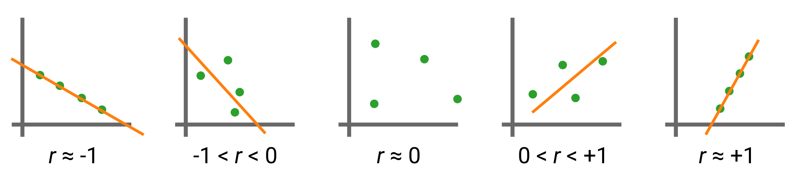

MSE 104L laboratory 3 exercises
Contents
MSE 104L laboratory 3 exercises¶
Authors: Enze Chen (University of California, Berkeley)
Note
This is an interactive exercise, so you will want to click the and open the notebook in DataHub (or Colab for non-UCB students).
This notebook contains a series of exercises to help you process your data from Lab 3. It doesn’t answer all of the discussion questions in the lab procedures, but it will help you create some figures that can supplement the narrative of your lab report.
Plot a spectra as a sanity check¶
Just like Lab 2, we’ll start with a plot of one of the spectra, which you should include at least one of so your readers have a general sense of what Cu–Ni alloy XRD patterns look like.
Remember the general steps are:
Upload your data to JupyterHub in the
lab3folder.Write code below (add a new Code cell) to process and plot the data.
Save the figure and download it to your computer.
If you don’t remember what you did in lab 2, you can always reference your completed notebooks (assuming you did them) by going to JupyterHub (https://datahub.berkeley.edu) and opening them 📁 > mse104l > lab2.
We hope plotting in Python feels smooth at this point, whether it’s from muscle memory or referencing templates.
Write a function to calculate the lattice constant¶
In the previous lab, you had to calculate the lattice constant and apply the Nelson-Riley method for your samples with cubic crystal structure. Well, since Cu–Ni forms an FCC solid solution, you have the great privilege of repeating what you did for each of your samples here. Of course, if you did the programming solution last time, you’ll have no problem with this part of the lab. 😁 There are two ways to go about this:
(Works) You can copy-paste the individual code sections from the previous lab into a single code block and just run it repeatedly, with different peak positions (corresponding to different Cu–Ni samples), to get lattice constants through Nelson-Riley.
(Slightly snazzier?) You can do something fancier and write a function that makes things look cleaner as you repeat the steps. Recall that functions in Python look like:
def function_name(args):
# do something
Here’s an example of what we mean:
# ------------- WRITE YOUR CODE IN THE SPACE BELOW ---------- #
import numpy as np
import pandas as pd
# add more imports here
def df_calcs(angles, wavelength):
# in your function, this would be the operations to calculate the lattice constant
df = pd.DataFrame({'angles':angles})
df['sub'] = df['angles'] - 1
df['d'] = np.sqrt(df['sub'])
df['s'] = [3, 4, 6, 12]
df['a'] = df['d'] * df['s']
return df
def make_nr(dataframe):
# make a similar function that makes NR plots based on the DataFrame!
pass
# ------------------------------------------------------------
# change the inputs below and call the function - voila!
data = [17.02, 10.0, 4.99, 2.01]
wl = None
df = df_calcs(data, wl)
display(df)
make_nr(df)
| angles | sub | d | s | a | |
|---|---|---|---|---|---|
| 0 | 17.02 | 16.02 | 4.002499 | 3 | 12.007498 |
| 1 | 10.00 | 9.00 | 3.000000 | 4 | 12.000000 |
| 2 | 4.99 | 3.99 | 1.997498 | 6 | 11.984991 |
| 3 | 2.01 | 1.01 | 1.004988 | 12 | 12.059851 |
Vegard’s law¶
Recall that in the pre-lab you learned about Vegard’s law (which is pretty remarkable!) that says:
where \(a_X\) and \(x_X\) are the lattice constant and concentration, respectively, of species \(X\). For the binary case where this applies, note \(x_{\text{B}} = 1 - x_{\text{A}}\).
Anyways, you’ll do the Nelson-Riley calculation above and get a few values of \(a\) corresponding to different concentrations \(x\). You then have to plot this and comment on whether Vegard’s law is obeyed. There are several ways to answer this question, and we encourage you to be creative. Here are just two suggestions, one based on something you’ve seen, and another based on something that you have probably heard before and we’ll teach you how to calculate it.
Like with Nelson-Riley plots, you can compute a line of best fit, plot that line, and look at the intercepts at \(x=0\) and \(x=1\). Do they agree with the experimental lattice constants of the pure metals? Can you quantify the amount of error?
You can compute a linear correlation coefficient (also known as Pearson’s \(r\)) between your values of \(a\) and \(x\). Pearson’s \(r\) can be expressed mathematically as:
where \(\sigma(\cdot)\) is the standard deviation, and values of \(r\) range from \([-1, +1]\) as follows:

Please note: A friendly reminder that \(r\) has no relationship to the orange line of best fit (it is not the slope!), but rather is an estimate of the linearity between the green data points. The orange line is merely a guide to the eye.
Computing \(r\)¶
Once again, NumPy makes our lives pretty easy by handing to us the np.corrcoef() function.
This function takes in x and y arrays and returns their correlation coefficient as a matrix (which element should we choose?).
It should take only a few lines of code—see if you can get it working!
# ------------- WRITE YOUR CODE IN THE SPACE BELOW ---------- #
Conclusion¶
This concludes the programming exercises for Lab 3. Congratulations! We hope you’re proud of the plots that you generated and wish you luck with the lab writeup. 📝